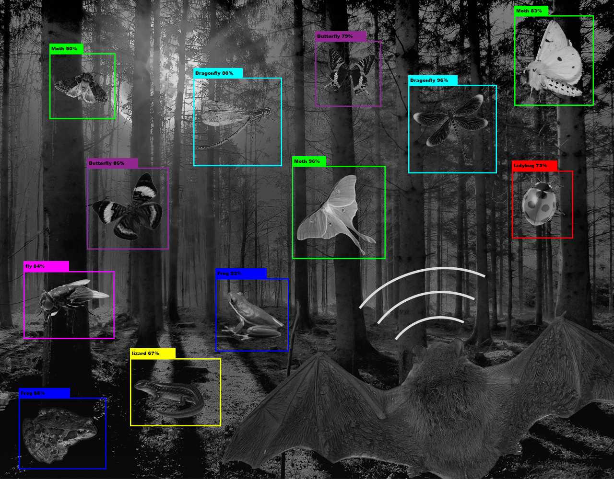

Seeing
the world WITHOUT EYES
the world WITHOUT EYES

Chapter 1. Introduction

In the fascinating world of nature, bats stand out as extraordinary creatures capable of navigating and hunting in complete darkness. This ability is made possible through a sophisticated biological system known as echolocation. By emitting high-frequency sound waves and analysing the returning echoes, bats can construct a detailed map of their surroundings, detect objects, and identify prey with remarkable precision.
Understanding how bats use echolocation not only sheds light on their unique adaptation but also offers valuable insights into the principles of advanced detection and navigation systems. Through their echolocation, bats exemplify the core elements of environmental awareness, object detection, and real-time data processing. By delving into the intricacies of bat echolocation, we can better appreciate the parallels between these natural processes and modern technological applications in various fields.
This website will explore the fundamentals of bat echolocation, examining how these nocturnal navigators emit, receive, and interpret sound waves to create an accurate and dynamic representation of their environment. By understanding the mechanisms and advantages of echolocation, we can gain a deeper appreciation for the intricate balance of nature and its influence on technological advancements.
Understanding how bats use echolocation not only sheds light on their unique adaptation but also offers valuable insights into the principles of advanced detection and navigation systems. Through their echolocation, bats exemplify the core elements of environmental awareness, object detection, and real-time data processing. By delving into the intricacies of bat echolocation, we can better appreciate the parallels between these natural processes and modern technological applications in various fields.
This website will explore the fundamentals of bat echolocation, examining how these nocturnal navigators emit, receive, and interpret sound waves to create an accurate and dynamic representation of their environment. By understanding the mechanisms and advantages of echolocation, we can gain a deeper appreciation for the intricate balance of nature and its influence on technological advancements.
Chapter 2: Bat's Sonar
Bats navigate and hunt in complete darkness using echolocation, a sophisticated biological sonar system. They emit high-frequency sound waves that bounce off objects and return as echoes. By analysing these echoes, bats create a mental map of their surroundings, enabling them to detect obstacles, locate prey, and manoeuvre with remarkable precision.
Producing ultrasonic sounds beyond human hearing, bats emit these sounds in rapid bursts while flying. Their highly sensitive ears are uniquely adapted to capture even faint sound waves. By measuring the time delay between sound emission and echo reception, bats determine the distance to objects. This precise timing provides crucial information about the size, distance, and location of objects.
The echolocation process involves several steps. Bats emit sound waves that travel through the air, penetrating various obstacles. The returning echoes vary in pitch and intensity based on the characteristics of the objects they encounter. The bat's brain processes these echoes, calculating distance and direction, and using frequency changes to determine movement and speed.
The echolocation process involves several steps. Bats emit sound waves that travel through the air, penetrating various obstacles. The returning echoes vary in pitch and intensity based on the characteristics of the objects they encounter. The bat's brain processes these echoes, calculating distance and direction, and using frequency changes to determine movement and speed.
Echolocation offers bats several advantages. It allows them to detect small and fast-moving objects, such as insects, with incredible accuracy. This precision is essential for their survival, enabling efficient hunting and obstacle avoidance. By continuously emitting and receiving sound waves, bats create a dynamic 3D map of their surroundings, constantly updated as they move. This adaptability ensures that bats can navigate effectively in various conditions, including complete darkness, dense foliage, and cluttered spaces.

In summary, bats utilise echolocation to perceive their environment with exceptional accuracy. By emitting ultrasonic sound waves and interpreting the returning echoes, they can detect and analyse objects, forming a detailed and dynamic mental map. This remarkable adaptation showcases the ingenuity of evolution and offers insights into advanced detection and navigation principles.
Chapter 3: Detection and Analysis of Objects

Bats possess remarkable echolocation abilities that enable them to detect objects with exceptional precision. They emit high-frequency sound waves that travel through the air until they hit an object and bounce back. The returning echoes are received by the bat's sensitive ears, enabling them to detect obstacles in their flight path and navigate safely, avoiding collisions with trees, walls, or other bats. By analyzing the time it takes for echoes to return, bats can pinpoint the exact location of their prey, such as insects.
They can also detect the size and movement of the prey, allowing for accurate targeting. For instance, a bat can distinguish between a small moth and a larger beetle based on the strength and pattern of the echo. Additionally, the quality of the echo can provide information about the texture and material of an object, helping bats determine whether an area is safe to land on or if it contains potential food sources.
They can also detect the size and movement of the prey, allowing for accurate targeting. For instance, a bat can distinguish between a small moth and a larger beetle based on the strength and pattern of the echo. Additionally, the quality of the echo can provide information about the texture and material of an object, helping bats determine whether an area is safe to land on or if it contains potential food sources.
Bats use the intensity of the echoes to gauge the distance and dimensions of objects. A stronger, broader echo indicates a larger object, while a weaker, narrower one suggests a smaller object. This capability allows bats to differentiate between various elements in their environment, ensuring they can navigate and hunt efficiently. The Doppler effect plays a vital role in understanding an object's movement. As a bat flies, it can detect changes in the frequency of the returning echoes. If the frequency of the echo increases, it means the object is moving closer to the bat. Conversely, if the frequency decreases, the object is moving away. This effect allows bats to determine both the speed and direction of moving objects, which is essential for hunting agile prey.
Processing echoes involves a sophisticated form of analysis where the bat's brain quickly and accurately interprets a vast amount of information. The bat's auditory cortex is highly specialized, enabling it to perform complex computations almost instantaneously. This rapid processing is crucial for survival, as it allows the bat to react swiftly to environmental changes and potential threats. To fully understand this process, consider the formula:
Processing echoes involves a sophisticated form of analysis where the bat's brain quickly and accurately interprets a vast amount of information. The bat's auditory cortex is highly specialized, enabling it to perform complex computations almost instantaneously. This rapid processing is crucial for survival, as it allows the bat to react swiftly to environmental changes and potential threats. To fully understand this process, consider the formula:
Object Classification + Object Localization
= Object Detection.
= Object Detection.
By combining object classification and localization, bats achieve precise object detection, enabling them to navigate their environment and locate prey with exceptional accuracy. This advanced detection system is fundamental to their ability to thrive in diverse environments, from dense forests to open spaces.

Chapter 4: Utilizing and Constructing a 3D Map
Through constant echolocation, bats construct a dynamic 3D map of their environment, a process essential for their navigation and hunting. This 3D map provides bats with a comprehensive understanding of their surroundings. By integrating multiple echoes from different directions, bats form a detailed spatial map that includes the positions of trees, rocks, water bodies, and potential prey or predators. The echolocation process allows for real-time updates to the bat's internal map, ensuring accurate navigation. As bats fly, they constantly emit sound waves and receive echoes, continuously refining their 3D map. This ongoing process helps bats adapt to changing environments, such as moving through a crowded area, avoiding newly introduced obstacles, or following a fleeing insect. By maintaining an up-to-date spatial map, bats can respond quickly to new challenges and opportunities in their environment.

Moreover, the dynamic nature of the bat’s 3D mapping system means that it can adjust to both static and dynamic objects. Static objects, such as trees and rocks, are mapped once and provide consistent reference points. In contrast, dynamic objects, such as other bats, prey, and potential predators, require constant tracking and updating. This dual capability ensures that bats can navigate effectively whether they are foraging for food, avoiding predators, or finding their way back to a roost. The ability to visualise their surroundings in three dimensions enables bats to fly swiftly and accurately even in complete darkness. When flying through dense forests or caves, bats can manoeuvre through narrow passages and around obstacles without crashing, thanks to their 3D maps.
This sophisticated mapping system allows bats to thrive in various environments, from dense forests to open spaces, ensuring they can navigate and hunt effectively in complete darkness. Bats maintain an acute awareness of their surroundings, adapting seamlessly to different terrains and conditions. The advanced spatial awareness provided by their 3D maps allows bats to excel in navigating complex habitats, ensuring they can hunt effectively, avoid dangers, and thrive in their ecological niches.
This sophisticated mapping system allows bats to thrive in various environments, from dense forests to open spaces, ensuring they can navigate and hunt effectively in complete darkness. Bats maintain an acute awareness of their surroundings, adapting seamlessly to different terrains and conditions. The advanced spatial awareness provided by their 3D maps allows bats to excel in navigating complex habitats, ensuring they can hunt effectively, avoid dangers, and thrive in their ecological niches.